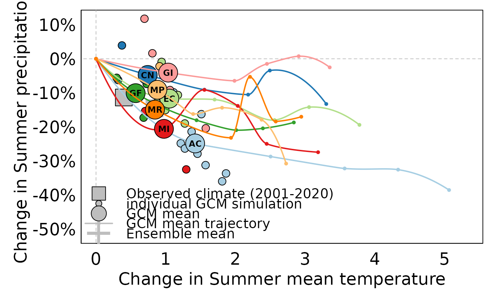

Bivariate climate change plots
plot_bivariate.RdBivariate plots of 21st century climate change for user-selected locations and climate variables. The purposes of the plot are to
show differences in climate change trends among global climate models (GCMs),
show the differences between multiple simulations of each model, and
compare simulated climate change to observed climate change in the 2001-2020 period.
All climate changes are relative to the 1961-1990 reference period normals.
Usage
plot_bivariate(
xyz,
xvar = "Tave_sm",
yvar = "PPT_sm",
period_focal = list_gcm_period()[1],
gcm_models = list_gcm()[c(1, 4, 5, 6, 7, 10, 11, 12)],
ssp = list_ssp()[2],
historic_period = list_historic()[1],
gcm_period = list_gcm_period(),
max_run = 10,
legend_pos = "bottomleft",
show_runs = TRUE,
show_ensMean = TRUE,
show_observed = TRUE,
show_trajectories = TRUE,
interactive = FALSE,
cache = TRUE
)Arguments
- xyz
a
data.framewith the following columns "long", "lat", "elev", and a unique "id". Any extra columns will be ignored and not output.- xvar
character. x-axis variable. options are
list_variables().- yvar
character. y-axis variable. options are
list_variables().- period_focal
character. The 20-year period for which to plot the ensemble detail. options are
list_gcm_period().- gcm_models
character. Vector of GCM names. Options are
list_gcm(). Used for gcm periods, gcm timeseries, and historic timeseries. DefaultNULL- ssp
character. Vector of labels of the shared socioeconomic pathways to use. See available options with
list_ssp(). Defaults to all SSPs available.- historic_period
character. Which historic period. Default
NULL- gcm_period
character. Requested future periods. Options are
list_gcm_period()- max_run
integer. Maximum number of model runs to include. A value of 0 returns the
ensembleMeanonly. Runs are included in the order they are found in the models data untilmax_runis reached. Defaults to 0L.- legend_pos
character. Position of the legend. Options are
c("bottomright", "bottom", "bottomleft", "left", "topleft", "top", "topright", "right", "center").- show_runs
logical. If TRUE, the individual runs of the model are plotted (for
period_focalonly) in addition to the single-model ensemble mean.- show_ensMean
logical. If TRUE, the multi-model ensemble mean is plotted (for
period_focalonly).- show_observed
logical. If TRUE, the 2001-2020 observed climate is plotted.
- show_trajectories
logical. If TRUE, the values of the single-model ensemble mean are plotted for all 20-year periods in
list_gcm_period(), connected by an interpolation spline.- interactive
logical. If TRUE, an interactive plot is generated using
{plotly}. If FALSE, a plot is generated using base graphics.- cache
logical. Cache data locally? Default
TRUE
Details
The input table xyz can be a single location or multiple locations. If multiple locations, the plot provides the mean of the anomalies for these locations.
The climate change trajectories provided by show_trajectories are points for each of the five 20-year periods specified by list_gcm_period(). These points are connected with an interpolation spline when the x variable is monotonic; otherwise the trajectory points are connected by straight lines.
This plot is designed to be used with a single SSP scenario. If multiple scenarios are passed to the plot, the GCM means and ensemble mean are averaged across the scenarios, but the individual runs for all scenarios are plotted separately.
Examples
# data frame of arbitrary points on Vancouver Island
my_points <- data.frame(lon = c(-123.4404, -123.5064, -124.2317),
lat = c(48.52631, 48.46807, 49.21999),
elev = c(52, 103, 357),
id = LETTERS[1:3]
)
# draw the plot
plot_bivariate(my_points)
#> Loading required namespace: stinepack
#> Welcome to climr!
#> Getting normals...
#> for BC...
#> Not fully cached :( Will download more
#> Downloading new data...
#> .
#> Caching data...
#> Getting historic...
#> Retrieving from cache...
#> Getting GCMs...
#> Not fully cached :( Will download more
#> Downloading GCM anomalies
#> Caching data...
#> Downloading GCM anomalies
#> .
#> Caching data...
#> Downloading GCM anomalies
#> .
#> Caching data...
#> Downloading GCM anomalies
#> .
#> Caching data...
#> Downloading GCM anomalies
#> .
#> Caching data...
#> Downloading GCM anomalies
#> .
#> Caching data...
#> Downloading GCM anomalies
#> .
#> Caching data...
#> Downloading GCM anomalies
#> .
#> Caching data...
#> Downscaling!!

# export plot to the working directory
png(filename="plot_test.png", type="cairo", units="in", width=6, height=5, pointsize=10, res=300)
plot_bivariate(my_points)
#> Welcome to climr!
#> Getting normals...
#> for BC...
#> Retrieving from cache...
#> Getting historic...
#> Retrieving from cache...
#> Getting GCMs...
#> Retrieving from cache...
#> Retrieving from cache...
#> Retrieving from cache...
#> Retrieving from cache...
#> Retrieving from cache...
#> Retrieving from cache...
#> Retrieving from cache...
#> Retrieving from cache...
#> Downscaling!!
dev.off()
#> agg_png
#> 2